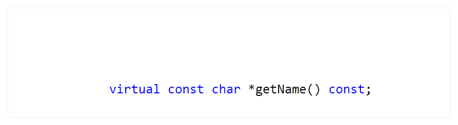
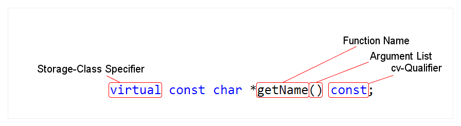
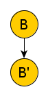
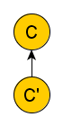
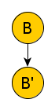
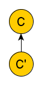

NI Tech Talks
Return Type Covariance
// Stefan Gränitz, Reaktor Dev Team, Berlin 2014 06 17
Return Type Covariance
 
Return Type Covariance
- if something varies, it changes in nuances
- co-prefix expresses relation: when two things vary, they vary the same way
 



regarding A..
- B' is covariant from B
- C' is contravariant from C
A = factory B = product
A' = special factory B' = special product
Return Type Covariance in C++
class IHardware { }; class MaschineController : public IHardware { }; class TraktorKontrol : public IHardware { }; class IFactory { public: virtual IHardware *createHardware() const = 0; }; class MaschineFactory : public IFactory { public: MaschineController *createHardware() const override; }; class TraktorFactory : public IFactory { public: TraktorKontrol *createHardware() const override; };
§ 10.3.7 Virtual functions The return type of an overriding function shall be either identical to the return type of the overridden function or covariant with the classes of the functions. If a function D::f overrides a function B::f, the return types of the functions are covariant if they satisfy the following criteria:
- both are pointers to classes, both are lvalue references to classes, or both are rvalue references to classes
- the class in the return type of B::f is the same class as the class in the return type of D::f, or is an unambiguous and accessible direct or indirect base class of the class in the return type of D::f
- both pointers or references have the same cv-qualification and the class type in the return type of D::f has the same cv-qualification as or less cv-qualification than the class type in the return type of B::f
base class declaration's return type is ok!
class IFactory { public: virtual const IHardware *createHardware() const = 0; }; class MaschineFactory : public IFactory { public: MaschineController *createHardware() const override; }; class TraktorFactory : public IFactory { public: TraktorKontrol *createHardware() const override; };
class IHardware { public: virtual const char *getBrand() const = 0; }; class MaschineController : public IHardware { public: char *getBrand() const override; }; class TraktorKontrol : public IHardware { public: char *getBrand() const override; };
Literature & further reading
Comprehensive Wikipedia article
http://en.wikipedia.org/wiki/Covariance_and_contravariance_(computer_science)
What's New in Standard C++[98]?
http://www.drdobbs.com/whats-new-in-standard-c/184403580
Good answer for cv-qualifiers on covariant return types
http://stackoverflow.com/a/3593613